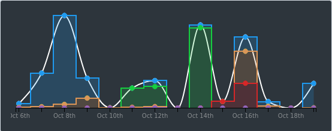
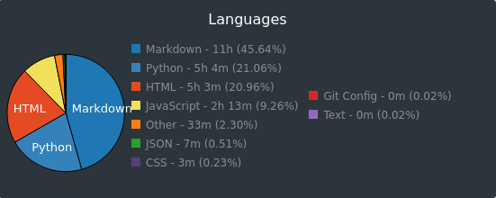

October 20, 2020 - 1 minute read
100 Days of Code - Days 16 to 30
This is the second retrospective of my #100DaysOfCode.
Metrics
I coded for 24 hours and 4 minutes, according to WakaTime. That is a huge improvement! The first 15 days didn't get past 14 hours.

Markdown is still the top language as I'm using it much more for this website maintenance. However, this time around I was working on a different project and I had the opportunity to tap into different languages besides Python.

Rocked (or things that went really well):
- Access to high-quality material: Still a good one. This time I used A Cloud Guru to get Python into the real world of cloud. Which leads us to the next item.
- Project: to further my practice, I continued the Cloud Resume Challenge from where I stopped. When I first published my website I wanted it to be as simple as possible so, although heavily based, I avoided the coding part of the challenge. Now I had to study Lambda, DynamoDB, API Gateway. Still going with AWS SAM for the last touches of Infrastructure as Code and testing my Python functions.
Flopped (or things that I should consider stop doing):
- Distractions: it seems all fine and dandy, but there was a 6-day gap between the days 19 and 20. Life got in the way pretty hard. I was about to quit when the 100DaysOfCode community suggested I just hop back on the coding wagon and so I kept going.
- Not having a structure: I sorted this out by picking a project at a time. I'm not thinking too much ahead, just finishing one project and preparing for the next.
In Conclusion
The Cloud Resume Challenge really got me excited to apply the Python I learned in the first 15 days, using AWS Lambda. It was a nice and short piece of code.
For more detail on how I did each day, check out my 100 Days of Code Log on Github. Follow me on Twitter for all my 100 Days Of Code tweets.